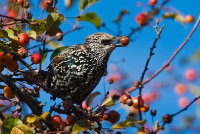
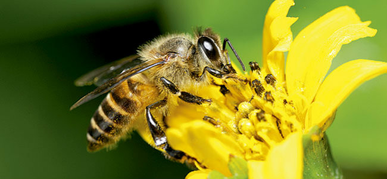
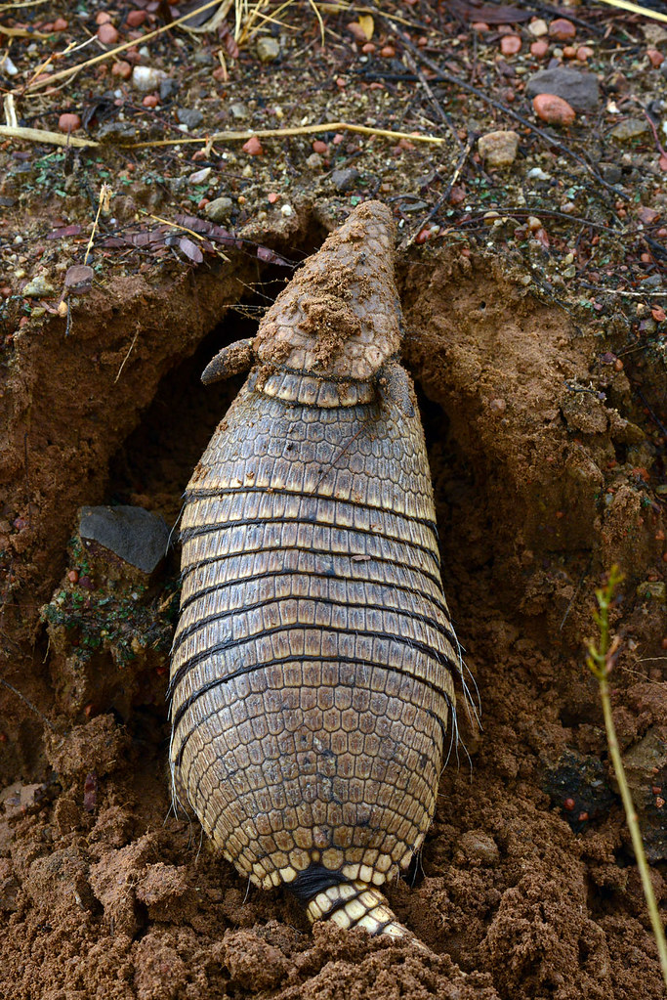
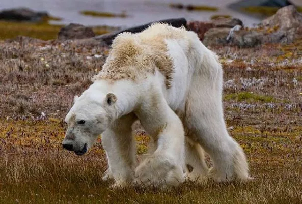
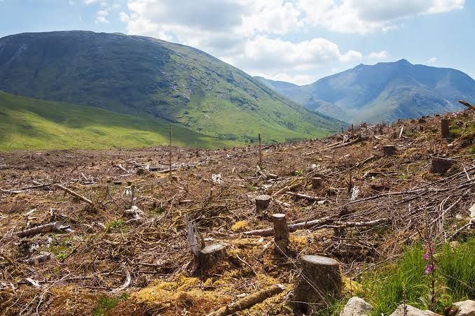
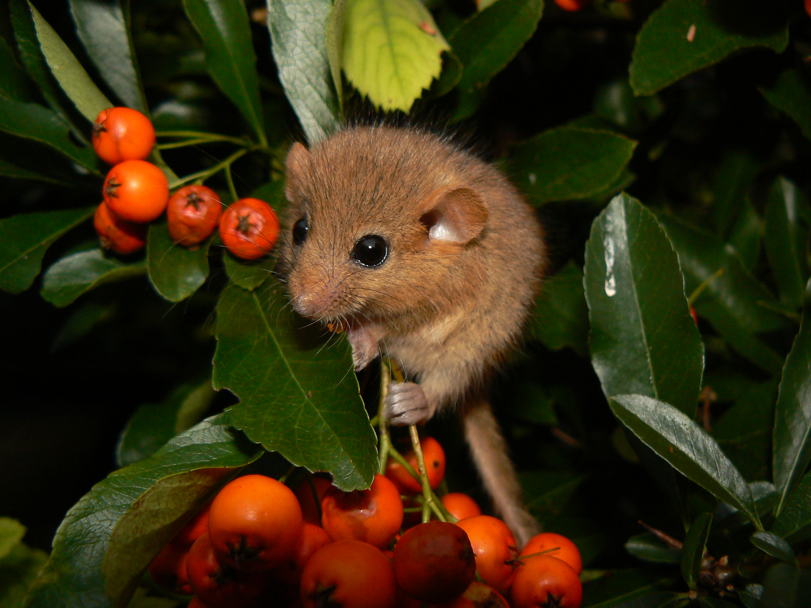
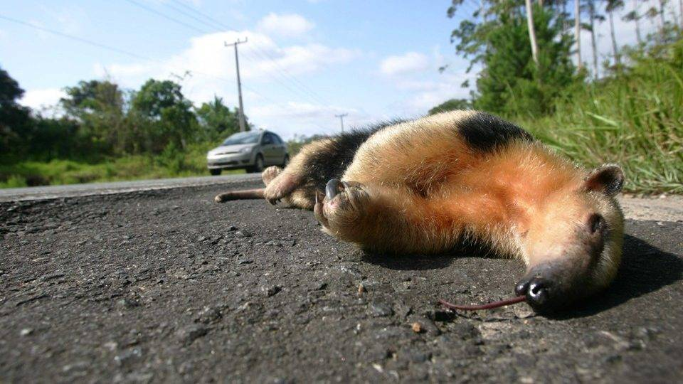
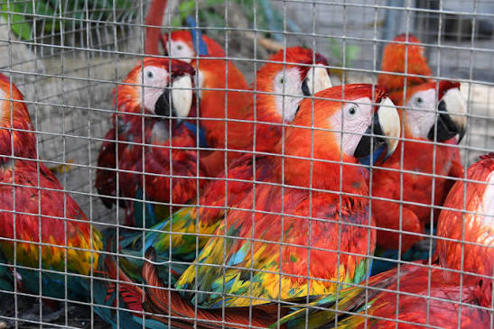
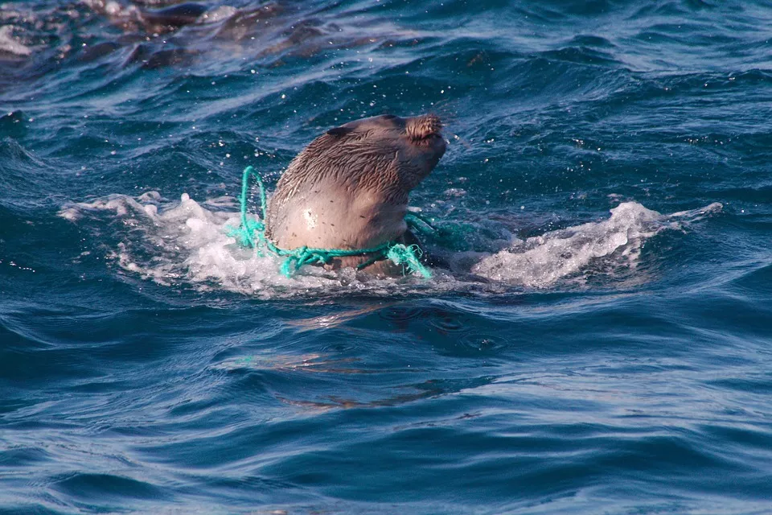

Entendendo a importância dos mamíferos na Biosfera e a sua necessidade de conservação
Importância dos Mamíferos
Os mamíferos são importantes para o equilíbrio dos ecossistemas.
Eles ajudam em diversas áreas, como:
Dispersão de Sementes
Os mamíferos frugívoros, que se alimentam de frutos, desempenham um papel
importante na regeneração das florestas. Ao ingerirem frutos, esses animais
podem transportar as sementes para outros locais, seja por meio do deslocamento
ou da eliminação nas fezes. Esse processo, chamado de dispersão de sementes,
contribui para a colonização de novas áreas, a manutenção da diversidade vegetal
e a recuperação de ambientes degradados.
Atenção para o ENEM:
A redução de mamíferos dispersores pode comprometer a regeneração florestal,
pois diminui a chegada de sementes a novos locais. Esse fenômeno demonstra
a interdependência entre animais e plantas e a importância das interações
ecológicas para a manutenção da biodiversidade.

Controle de Populações
Os mamíferos participam da regulação das populações de outros organismos
por meio das relações alimentares. Predadores, como a onça-pintada,
contribuem para controlar as populações de suas presas, enquanto herbívoros
influenciam a vegetação ao consumir folhas, frutos e outras partes das plantas.
Essas interações ajudam a manter o equilíbrio dinâmico dos ecossistemas e
influenciam a distribuição e a abundância das espécies.
Atenção para o ENEM:
A diminuição de um predador pode provocar o aumento de suas presas e alterar outros
níveis da cadeia alimentar. Essas consequências podem se propagar pelo ecossistema,
caracterizando uma cascata trófica. Entretanto, os efeitos dependem das espécies
envolvidas e das características do ambiente.
Polinização
Embora seja frequentemente associada aos insetos, a polinização também pode
ser realizada por determinados mamíferos. Alguns morcegos, por exemplo,
alimentam-se do néctar das flores e transportam grãos de pólen entre elas.
Essa transferência favorece a fecundação das plantas e, em espécies vegetais
que dependem desse processo, contribui para a formação de frutos e sementes,
além de auxiliar na manutenção da diversidade vegetal.
Atenção para o ENEM:
A polinização é um exemplo de interação ecológica que pode beneficiar tanto a planta
quanto o animal: a planta tem seu processo reprodutivo favorecido, enquanto o mamífero
obtém alimento. Essa relação pode ser classificada como mutualismo quando ambas as
espécies se beneficiam, especialmente em associações de dependência recíproca.

Modificação do Ambiente
Alguns mamíferos modificam fisicamente os ambientes em que vivem. Tatus e
outros animais escavadores, por exemplo, constroem tocas que alteram a
estrutura do solo e podem servir de abrigo para diferentes organismos.
Essas escavações também podem favorecer a infiltração de água e a movimentação
de nutrientes. Além disso, os resíduos e a decomposição dos organismos
contribuem para a ciclagem de nutrientes, processo essencial à manutenção da
fertilidade do solo e da produtividade dos ecossistemas.
Atenção para o ENEM:
As alterações provocadas pelos organismos no ambiente demonstram que os seres vivos
não apenas dependem dos ecossistemas, mas também contribuem para modificá-los.
Questões podem relacionar essas atividades à estrutura do solo, à disponibilidade
de recursos e à criação de habitats para outras espécies.

Ciclagem de Nutrientes
Os mamíferos contribuem para a ciclagem de nutrientes ao participar da
decomposição indireta da matéria orgânica, da dispersão de sementes e da
transferência de nutrientes entre diferentes ambientes. Por meio das fezes
e da urina, eles devolvem nutrientes ao solo, onde podem ser reutilizados
pelas plantas e por outros organismos. Além disso, ao se alimentarem e se
deslocarem, podem transportar nutrientes de uma região para outra, contribuindo
para o funcionamento dos ecossistemas.
Atenção para o ENEM:
A ciclagem de nutrientes permite a reutilização da matéria nos ecossistemas e
contribui para a manutenção da fertilidade do solo e do equilíbrio ecológico.
Como o comportamento dos mamíferos afeta o meio ambiente?
Os mamíferos apresentam diferentes comportamentos. Alguns
vivem em grupos, como os macacos e os elefantes, enquanto
outros preferem viver sozinhos, como algumas onças. Eles
se comunicam por sons, cheiros, gestos e movimentos corporais.
Muitos caçam para conseguir alimento e cuidam dos filhotes,
protegendo-os e alimentando-os até que consigam sobreviver
sozinhos.
O comportamento dos mamíferos influencia diretamente a
dinâmica dos ecossistemas, pois seus hábitos alimentares,
deslocamentos e interações com outros organismos podem
modificar o ambiente. Mamíferos herbívoros, por exemplo,
consomem partes das plantas e podem interferir no crescimento
da vegetação, enquanto os carnívoros contribuem para a
regulação das populações de suas presas. Já os animais
onívoros participam de diferentes relações alimentares,
ocupando posições variadas nas cadeias e teias alimentares.
Além disso, o deslocamento dos mamíferos favorece a dispersão
de sementes, e a escavação de tocas pode alterar o solo e criar
abrigos para outras espécies. As relações sociais, a
territorialidade e a competição também influenciam a distribuição
dos indivíduos e o acesso aos recursos naturais. Dessa forma,
mudanças no comportamento ou na abundância desses animais podem
desencadear efeitos sobre outras populações e comprometer o
equilíbrio ecológico.
Atenção para o ENEM:
É importante compreender que:
Hábitos alimentares: a alteração na abundância de predadores ou herbívoros pode modificar as populações de outros organismos e a vegetação.
Deslocamento: a migração e a dispersão de sementes conectam diferentes áreas e contribuem para processos ecológicos.
Competição: espécies que utilizam recursos semelhantes podem competir por alimento, espaço e abrigo.
Alteração ambiental: a construção de tocas e outras atividades podem modificar o solo e criar condições para outros organismos.
Conservação dos Mamíferos
O aumento da temperatura média global contribui para o derretimento
do gelo marinho do Ártico, reduzindo o habitat utilizado pelos ursos-
polares para caçar focas. Com menor acesso ao alimento, esses animais
podem enfrentar períodos mais longos de jejum e redução de sua
sobrevivência e reprodução.
Atenção para o ENEM:
A questão pode relacionar a emissão de gases de efeito estufa à perda de
habitat e às alterações nas relações alimentares.

A remoção da vegetação e a divisão de uma floresta em fragmentos
isolados reduzem os espaços disponíveis para alimentação, abrigo
e reprodução. Populações pequenas e isoladas ficam mais vulneráveis
a eventos ambientais, à endogamia e à perda de diversidade genética.
Atenção para o ENEM:
Atenção à diferença entre perda de habitat e fragmentação: esta última
também dificulta o deslocamento e o fluxo gênico entre populações.

Quando grandes predadores diminuem, algumas populações de presas podem
aumentar e intensificar o consumo de determinados recursos. Isso pode
afetar a vegetação e outros organismos, provocando efeitos em diferentes
níveis da teia alimentar.
Atenção para o ENEM:
O conceito central é a cascata trófica: uma alteração no nível dos predadores
pode repercutir em outros níveis da cadeia alimentar.
Antas, primatas e outros mamíferos que consomem frutos podem
transportar sementes para longe da planta-mãe. A redução desses
animais pode limitar a dispersão de certas espécies vegetais e
modificar a composição e a regeneração da floresta.
Atenção para o ENEM:
A extinção local de um animal pode afetar plantas e outros organismos,
demonstrando a interdependência entre as espécies.

Rodovias atravessando ambientes naturais podem causar mortalidade por
atropelamento e dificultar o deslocamento de mamíferos. A separação de
populações pode reduzir o fluxo gênico e aumentar o isolamento,
especialmente quando existem poucas rotas alternativas.
Atenção para o ENEM:
Passagens de fauna, cercas direcionadoras e planejamento territorial
podem reduzir impactos, desde que sejam adequados às espécies presentes.

A retirada de indivíduos da natureza pode diminuir populações e comprometer a
reprodução. Quando espécies que dispersam sementes ou controlam outras populações
se tornam raras, os efeitos podem ultrapassar a própria espécie explorada.
Atenção para o ENEM:
A conservação envolve fiscalização, combate ao comércio ilegal, proteção de habitats
e ações de educação ambiental.

Resíduos, substâncias tóxicas e poluentes lançados nos ambientes aquáticos
podem afetar golfinhos, botos e outros mamíferos. Algumas substâncias
persistentes acumulam-se nos organismos e podem atingir concentrações
maiores nos níveis tróficos mais elevados.
Atenção para o ENEM:
Diferencie bioacumulação, que ocorre no organismo ao longo do tempo,
de biomagnificação, que corresponde ao aumento da concentração de certos
contaminantes ao longo da cadeia alimentar.

Diversidade dos Mamíferos
O Brasil abriga uma grande diversidade de mamíferos, distribuídos por
biomas como Amazônia, Cerrado, Caatinga, Mata Atlântica, Pantanal e Pampa.
Entre as espécies brasileiras estão a onça-pintada, importante predadora;
a anta, que contribui para a dispersão de sementes; o lobo-guará, característico
do Cerrado; o mico-leão-dourado, associado à Mata Atlântica; o tamanduá-bandeira,
que se alimenta principalmente de formigas e cupins; e o boto-cor-de-rosa,
encontrado na Amazônia.
Apesar dessa diversidade, muitos mamíferos sofrem ameaças como desmatamento,
queimadas, caça ilegal, tráfico de animais e fragmentação de habitats. Esses
problemas reduzem as populações e comprometem a sobrevivência de diversas
espécies. Para protegê-las, é fundamental preservar e recuperar os ambientes
naturais, criar unidades de conservação, combater atividades ilegais e promover
a educação ambiental, contribuindo para a manutenção da biodiversidade e do
equilíbrio dos ecossistemas.
Atenção para o ENEM:
O desmatamento e a fragmentação de habitats ameaçam os mamíferos, reduzindo
suas populações e aumentando o risco de extinção. A conservação dessas espécies
depende da proteção dos ambientes naturais, da criação de áreas protegidas e da
manutenção do equilíbrio ecológico.